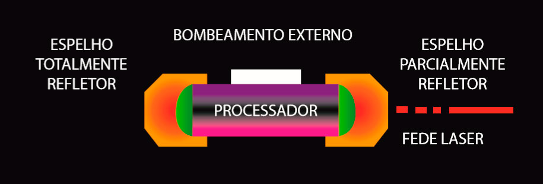
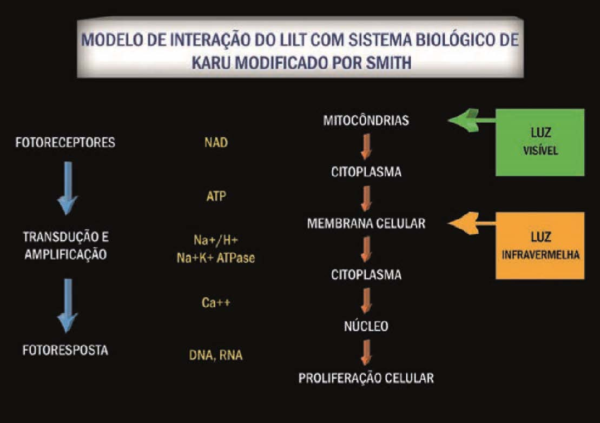

O laser é uma excepcional fonte de radiação, capaz de produzir, em bandas espectrais extremamente finas, campos eletromagnéticos intensos e coerentes que se estendem do infravermelho remoto ao ultravioleta. Não mais que alguns processos físicos simples concorrem para o funcionamento de um laser.
Para que um laser possa funcionar, devem ser satisfeitas, simultaneamente, três condições fundamentais. Em primeiro lugar, é necessário dispor de um meio ativo , ou seja, de uma coleção de átomos, moléculas ou íons, que emitam radiação na parte óptica do espectro. Em segundo lugar, deve ser satisfeita uma condição conhecida sob o nome de inversão de população . Esta condição, geralmente não preenchida em nosso ambiente natural, é gerada por um processo de excitação denominado bombeamento : ela transforma o meio ativo em meio amplificador de radiação. Finalmente, é indispensável dispor de uma reação óptica para que o sistema composto por essa reação óptica e pelo meio ativo seja a sede de uma oscilação laser

Figura 1 – Esquema básico dos componentes de um sistema laser (LIZARELLI – 2002).
O fascínio que o laser exerce sobre os cientistas explica-se por suas características excepcionais: monocromaticidade, pequena divergência, coerência espacial e temporal, intensa energia ou intensa potência, pulsos ultra-curtos, possibilidade de ajuste em comprimento de onda, etc. As propriedades de intensidade e diretividade dos lasers são familiares a qualquer observador, pois elas se manifestam imediatamente; já outras propriedades, como a monocromaticidade e a coerência, exigem uma análise mais aprofundada. Daí a necessidade de que mesmo o clínico se dedique aos estudos básicos do laser e sua interação com os tecidos biológicos antes de iniciar as aplicações em pacientes.
Todos os estudiosos persuadiram-se de que um futuro brilhante estava reservado para esse instrumento, alguns chegaram a prever que ele seria o instrumento de uma revolução tecnológica significativa. E ele o é, dentro da Odontologia. Talvez pela dificuldade econômica ainda nem todos os cirurgiões-dentistas possam ter conhecimento de todas as possibilidades permitidas pelo laser, mas aos poucos a “cultura-laser” está se instalando em nosso meio e em alguns anos esse novo instrumento excepcional e refinado fará parte indispensável do equipo odontológico, otimizando as terapias não-invasivas e mais seletivas.
Primeiramente, é preciso classificar os sistemas lasers quanto ao nível de excitabilidade que poderá estar causando no tecido-alvo biológico. Uma vez o laser absorvido pelo tecido, ele poderá atuar a nível molecular, excitando elétrons ou partes da molécula, promovendo movimento das cargas nessa molécula. Se essa excitabilidade for relativamente pequena, ou seja, se se tratar de um laser de baixa intensidade poderá ocorrer uma bioestimulação ou bioinibição para as reações químicas e fisiológicas naturais desse tecido; contudo, se se tratar de um laser de alta intensidade, a energia depositada nesse tecido-alvo será tão grande a ponto de romper ligações químicas dessas moléculas ou mesmo remover elétrons, resultando no rompimento desse tecido. Essa é a diferença básica entre um laser de baixa intensidade, que regula as funções fisiológicas celulares, e um laser de alta intensidade, que rompe ou modifica permanentemente o tecido através do corte, ablação, coagulação e vaporização do mesmo.
Analgesia temporária, regulação das reações envolvidas no processo inflamatório e biomodulação das respostas celulares são os resultados fisiológicos durante a aplicação dos sistemas LILT (Low Intensity Laser Therapy) ou LLLT (Low Level Laser Therapy), os lasers de baixa potência.
A laserterapia de baixa potência surgiu com Mester, na Hungria, em 1966, e tem sido utilizado por cirurgiões-dentistas brasileiros há mais de vinte anos. Trata-se de um tipo de laser que, sem dúvidas, deveria fazer parte da clínica odontológica diária. Mas por quê? A irradiação de células por certos comprimentos de onda pode ativar alguns componentes resultando em reações bioquímicas que poderão alterar completamente o metabolismo celular. Esse tipo de reação é conhecido como a base dos efeitos dos lasers de baixa potência (KARU – 1987, 1989, 1998; SMITH – 1991).
O laser de baixa potência como uma fonte de energia muito intensa e monocromática, que após absorvido, pode induzir uma resposta celular, buscando a homeostase sinestésica. Isso é possível porque nossas células não estão “acostumadas”, ou seja, adaptadas ainda a esse tipo de radiação, então, o laser de baixa potência age como um novo trauma, porém que pode ser controlado pelo operador. Através de aplicações em doses ou fluências adequadas, com comprimentos de onda (cor) endereçados ao sítio celular previamente escolhido, mitocôndrias ou membrana citoplasmática, por exemplo, o LILT torna possível uma “conversa” entre o terapeuta e as células lesadas. Como resultado final o próprio organismo estará sendo induzido à cura desejada.
Os primeiros sistemas LILT tinham como meio ativo uma mistura gasosa de gás hélio e neônio (lasers de HeNe) que emitiam na região do vermelho (632,8 nm), mas que apresentavam também outra linha de emissão no verde. Atualmente os sistemas laser LILT são, na sua grande maioria, constituídos de um cristal crescido em laboratório de diodo semicondutor de arseneto de gálio (GaAs) podendo estar dopado por diversos outros elementos, dependendo do comprimento de onda desejado (p. ex., In-índio dopa o cristal para emitir no comprimento de onda vermelho).
Os lasers de baixa potência possuem um efeito eminentemente analgésico, antinflamatório e biomodulador, sendo utilizados como nos casos de aftas, herpes labial, queilite angular, trismos, parestesia, hipersensibilidade dentinária, pós-cirurgias, pós-intervenções endodônticas, ou seja, quando o tecido biológico apresenta um desequilíbrio nas suas funções fisiológicas. Como efeitos da laserterapia pode-se citar os aumentos da microcirculação local e da velocidade da cicatrização. A existência da fotoestimulação pelos lasers de baixa intensidade, tópico tão controverso e pouco entendido antes de 1980, tem sido objeto de intenso estudo científico. A aplicação clínica demonstra a evidência factual então obtida, onde extensivas discussões dos mecanismos de ação da luz visível, monocromáticas e infravermelha, nos fotorreceptores primários de células e organismos, tem encantado tanto os profissionais clínicos quanto os pesquisadores. Sendo assim, o profissional cirurgião-dentista, clinico geral ou especialista, que busca oferecer um atendimento diferenciado ao seu paciente precisa aprender a trabalhar com a laserterapia (equipamentos, parâmetros, protocolos, entre outros) para atingir os melhores resultados e, de fato, promover com seriedade esse instrumento terapêutico.
1.1 – Grandezas Físicas Importantes
Para que seja possível entender, medir, escolher e controlar a irradiação dos tecidos a serem tratados, é necessário que se conheça o conceito de algumas grandezas físicas:
• Energia: para os fins a que nos destinamos, pode ser definida como a quantidade de luz depositada no tecido tratado, e a unidade utilizada é o J (Joule);
• Energia Total: pode ser calculada multiplicando a potência de saída (em Watts) pelo tempo de irradiação (em segundos), ou seja, utilizar a energia total (em Joules) apenas informa a quantidade total de energia depositada no tecido ao final da irradiação. A unidade é J (Joule).
• Fluência ou Dose ou Densidade de Energia: é a quantidade de energia aplicada no tecido com relação à área sobre a qual esta energia é aplicada, em outras palavras, é a distribuição da energia por unidade de área. A unidade, portanto, é J/cm² (Joule por centímetro quadrado);
• Potência: é a taxa com que uma quantidade de energia é transmitida ao tecido, ou seja, a relação entre energia aplicada e o tempo que leva para que ela seja aplicada. A unidade é W (Watt ou J/s); e,
• Irradiância ou Intensidade ou Densidade de Potência: é a razão com que a potência é dissipada numa certa área do tecido, ou a quantidade de energia por segundo aplicada numa certa área. A unidade utilizada é W/cm 2 . Estas definições também são necessárias ao terapeuta porque há uma confusão ao lidar com tais grandezas, especialmente entre a Potência e a Irradiância de um laser ou de um aparelho utilizado para aplicá-lo em tratamento; e também entre Energia e Dose. A energia poderá ser indicada tanto pela energia total ( J ) quanto pela densidade de energia ou dose ou fluência. Entretanto, utilizar a energia total como único parâmetro para o protocolo clínico não permite saber qual a área do tecido-alvo, nem ao menos se a irradiação foi realizada por varredura ou por pontos. Além disso, não será possível saber qual foi a potência empregada, muito menos por quanto tempo. Por isso, parece ser muito mais bem explicado colocar a dose ou fluência ou densidade de energia ( J/cm 2 ), mas mesmo assim, acrescida do comprimento de onda e da metodologia utilizada, por ponto ou varredura. Concordando com SMITH (2005), todo bom trabalho científico em foto-biologia deve especificar tudo sobre a fonte de luz escolhida, ou seja, comprimento de onda, potência de saída, dose ou fluência, área irradiada, tempo de irradiação, entre outros; pois, de outra forma, o experimento não poderá ser comparado, repetido ou tido como referência de apoio.
1.2 – Comprimento de onda e sua interação com o tecido biológico
Considerando o espectro eletromagnético, os comprimentos de onda (ou cor da luz) mais empregados para realizar a laserterapia de baixa intensidade estão na faixa do vermelho (de 630 a 700nm) e infravermelho próximo (de 700 a 904nm).
O laser vermelho, por penetrar menos, mas principalmente pelo mecanismo de absorção pelo qual ele interage com o tecido biológico, é indicado para lesões superficiais, tais como reparos teciduais (cicatrização e drenagem local), enquanto que o laser infravermelho, mais penetrante, mas pelo fato de interagir através de mudanças de polaridade nas biomembranas, tem sido o comprimento de onda de eleição para reparos neurais e ósseos, e também para promover a analgesia imediata e temporária, uma vez que atua alterando o potencial dessas membrana citoplasmática.
Com relação ao local de absorção, é necessário considerar os chamados cromóforos.
Os cromóforos, também denominados fotorreceptores, consistem em um grupo de moléculas inter-relacionadas que podem ser enzimas, membranas celulares, ou quaisquer outras substancias extracelulares que apresentem a capacidade de absorver luz num determinado comprimento de onda, mesmo não sendo especializadas para isto. A base dos efeitos do laser de baixa potência consiste na irradiação de células com um comprimento de onda adequado, o qual pode levar à ativação de componentes celulares e promover reações químicas específicas, responsáveis por alterar o metabolismo celular através das reações de redução. É a luz gerando uma foto-resposta em cadeia. Os cromóforos, com seus diferentes tamanhos e formas, são também componentes dos pigmentos da cadeia respiratória, e irão atuar ou ressonar através de uma estimulação específica ou uma energia de radiação. Dependendo do seu comprimento de onda, a radiação eletromagnética, na forma de luz absorvida, poderá estimular as macromoléculas, gerando uma transferência de energia para os elétrons e provocando mudanças nas proteínas. É o início de uma reação de oxi-redução.
Citando KARU (1988), o citocromo é o fotorreceptor primário presente nas mitocôndrias que apresenta uma absorbância nas regiões do infravermelho próximo e luz visível, desde que esteja na sua forma intermediária; ou seja, não pode estar totalmente oxidado ou reduzido.
Ainda citando KARU (1988), a cadeia respiratória mitocondrial é considerada um receptor da luz visível monocromática de baixa intensidade, havendo, desta forma, dependência da dose e comprimento de onda de radiação no efeito estimulador de tal radiação. comprimentos de onda vermelho (de 600 a 683nm) são absorvidos pelas semiquinonas e citocromo-oxidases e azul (de 400 a 450nm) pelas flavoproteínas e hemoproteínas. É através da cadeia respiratória que a célula reconhece o meio externo, regulando o comportamento celular.
1.2.1 – Mecanismos primários
Os mecanismos primários da ação da luz nos fotorreceptores ainda não estão bem estabelecidos, mas os prováveis eventos seriam:
• aceleração de elétrons causando mudanças nas propriedades de redução das moléculas;
• em condições fisiológicas a atividade do citocromo C oxidase é controlada pelo óxido nítrico (NO) que se une ao centro binuclear do citocromo. O NO, como um receptor de elétrons, compete com o O2 no processo de redução do citocromo. Existe a hipótese de que a irradiação com laser e a ativação do fluxo de elétrons na molécula de citocromo C oxidase possam reverter parcialmente o controle do NO sobre o citocromo e com isso aumentar a concentração de O2. Esta reação pode aumentar também a concentração de CuB oxidado;
• em condições patológicas poderá haver um aumento na concentração de NO produzido pelos macrófagos, ocasionando a diminuição da atividade respiratória em várias células. Nestas condições a ativação da respiração celular pelo laser de baixa intensidade poderá ter um efeito benéfico;
• durante a excitação dos elétrons ocorre um aquecimento devido ao aumento transitório local da temperatura absorvida nos cromóforos, e isto poderá causar mudanças celulares tanto a nível estrutural quanto na atividade bioquímica (reações secundárias) através da ativação ou inibição de enzimas;
• em condições normais na cadeia respiratória a redução de molécula de água produzira O2 - e H2 O2. Este aumento na concentração transitória de O2 e subseqüente aumento na concentração de H2 O2 poderá, então, resultar em resposta secundária como o aumento na concentração intracelular de Ca2+, alcalinizanização celular, ativação de Ca2+, Na2+, H+, alterações nas trocas de Na+ e Ca2+; e,
• a irradiação das células com altas doses e intensidade de luz, leva a hipótese de que absorção da luz pelas moléculas de porfirina e flavina ocasionaria a geração de O2 que causaria a estimulação da síntese de DNA. O primeiro mecanismo do efeito da luz ocorre na cadeia respiratória; isto significa que são O2 dependentes, sendo, portanto, uma reação aeróbica.
1.2.2 – Mecanismos secundários
A luz absorvida pelos cromóforos iniciará o mecanismo primário através da cadeia respiratória mitocondrial, que irá conectar-se a síntese de DNA no núcleo celular, quando então os mecanismos secundários começam outra fase do foto-resposta.
A foto-excitação induzirá mudanças no potencial de redução do citocromo C oxidase e também nos componentes flavinicos, levando a outras mudanças nas reações de redução (redox) e modulações em reações bioquímicas através da membrana celular. Para isto dois caminhos são sugeridos:
• Regulação redução-oxidação: conexão entre a função redox devido ativação da luz na mitocôndria pela absorção dos cromóforos, e mudança no estado redox do citoplasma levando a uma despolarização da membrana e, conseqüentemente, a um aumento do pH (alcalinização citoplasmática) e influxo de Ca+2.
. Nas células eucariontes, mudanças no estado redox da mitocôndria resultarão em mudanças no potencial redox do citoplasma. Este mecanismo é denominado de regulação redox; e,
• Controle intracelular de ATP, que está intimamente relacionado ao mecanismo de regulação redox; portanto, pequenas mudanças no ATP poderão alterar significativamente o metabolismo celular. A irradiação causa mudanças no estado total de redox celular no sentido da oxidação, sendo que a luz monocromática visível e próxima ao infravermelho inicialmente é absorvida pelas mitocôndrias e eventualmente podem determinar um estímulo na síntese de DNA.
Com relação à luz infravermelha, SMITH (1991) utilizou o modelo de Tiina Karu modificado para explicar a interação ao nível celular dessa radiação (figura 2). Ocorrem mudanças fotofísicas na membrana celular gerando o mesmo efeito para aumento da permeabilidade aos íons Ca++, e o resultado final será o mesmo. Os íons Ca++ são mensageiros intra-celulares em muitos sistemas de transdução sinalizadas.
A magnitude do efeito da irradiação será determinada pelo potencial de oxi-redução da célula no momento da irradiação (KARU in LASERS – 2000). Por outro lado, em relação ao mecanismo de alívio da dor (analgesia), a luz infravermelha atuará na membrana celular, causando sua hiperpolarização, ou seja, uma mudança foto-física vai acontecer como resultado da interação luz-célula biológica. A permeabilidade da membrana citoplasmática aumenta em relação aos íons de Ca++, Na+ e K+, determinando um aumento na atividade receptora da membrana celular. Em conseqüência disso, a síntese de endorfina e o potencial de ação das células neurais aumentam, enquanto que a quantidade de bradicinina bem como a atividade das fibras C de condução de estímulos dolorosos diminuem (WAKABAYASHI et al. – 1993). Essa seqüência de eventos resulta no alívio dos sintomas álgicos.
Simultaneamente ao processo acima descrito, ocorre um aumento na microcirculação local, melhorando a oxigenação das células em hipóxia (hipóxicas) e dos pontos-gatilho, ssim como um aumento da circulação linfática, reduzindo quadros de edema. Há também um aumento na atividade da enzima acetilcolinesterase (VIZI et al. – 1977), responsável por bloquear a sinapse neural, o que clinicamente é identificado como uma analgesia imediata e temporária alguns minutos após realizada a irradiação com laser infravermelho Outro efeito fisiológico a longo prazo que deve ser considerado é a reversibilidade da hiperpolarização da membrana celular depois da estimulação laser. Esta hiperpolarização poderia depender de um fechamento seletivo dos canais de sódio, relacionados com a ativação da lipoproteína de membrana. O efeito é determinado pelo tempo, intensidade e freqüência dos impulsos da irradiação. Isto é conseguido pela inibição do movimento celular pelo laser porque este ataca a área do centrossoma celular que determina modificações da morfologia celular. Depois de alguns minutos de irradiação e no período pós-irradiação, a motilidade celular chega a ser descoordenada e perde a capacidade para ela mesma dirigir-se para o fator quimiotático, o que gera desorganização de microtúbulos. Depois de uns poucos minutos os microtúbulos se organizam, mas os centríolos aparecem danificados. A irregularidade da motilidade está correlacionada ao dano dos centríolos. O sistema de membrana NADPH permanece intacto, o que explica os dados normais de produção e liberação de radicais livres. Em resumo, os efeitos biológicos induzidos pelo laser estão relacionados a uma ação sobre a polarização da membrana e a um efeito sobre o centrossoma (RICEVUTI et al. - 1989).
Seguindo um trabalho de retrospectiva da literatura de ORTIZ et al. (2001), algumas das explicações dos efeitos mediados pelo laser de baixa potência são:
• aumento dos níveis de b-endorfina no fluido espinal (NAVRATIL, DYLEVSKY – 1997; POKORA - 1993);
• aumento da excreção urinária de glicocorticóides, um inibidor da síntese de b-endorfina;
• aumento no limiar da dor através de um complexo mecanismo de bloqueio eletrolítico das fibras nervosas. A permeabilidade da membrana das células nervosas para Na e K é diminuída, causando hiperpolarização;
• aumento dos níveis de serotonina na excreção urinária, um potente inibidor no sistema nervoso central;
• diminuição da liberação de substâncias algogênicas tais como bradicinina, histamina e acetilcolina;
• aumento na síntese de ATP;
• aumento da microcirculação local resolvendo a isquemia dos tecidos e facilitando a remoção de substâncias algogênicas; e,
• aumento do fluxo linfático, diminuindo o edema (SIMUNOVIC – 1996; SIMUNOVIC, TROBONJACA, TROBONJACA - 1998).
Outros autores também têm proposto, como possíveis explicações, uma interferência na mensagem elétrica da dor (HERCH, TERESI – 1997; COLLS - 1985), ou aumento da latência sensorial (SNYDER-MACKLER, BORK - 1998).
Hoje no mercado, é possível encontrar aparelhos com comprimentos de onda vermelho e infravermelho, separadamente ou com canetas inter-cambiáveis. Basicamente, o vermelho é mais indicado para regular a cicatrização e para drenagem linfática local, enquanto que o infravermelho é mais indicado para controle de sensibilidade dolorosa, principalmente quando a aplicação é feita nos “trigger-points” ou pontos-gatilho, e para o reparo neural e drenagem linfática local sobre os linfonodos. Cada um desses comprimentos de onda tem suas melhores indicações, sendo ambos, importantes na clínica.

Figura 2 – Modelo de interação da luz de baixa intensidade com a célula, unidade do sistema biológico (SMITH – 1991 modificado por LIZARELLI - 2003).